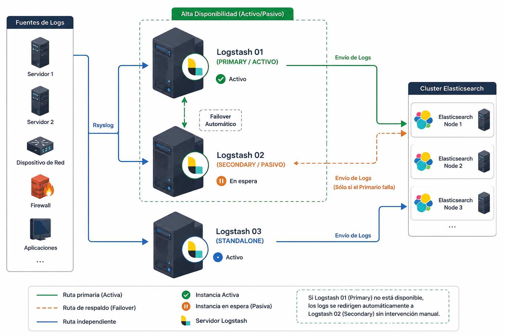

SERMAS
Documentación final de arquitectura
| CLIENTE | SERMAS |
|---|---|
| CONSULTORA | Inetum |
| ESTADO | Proyecto finalizado |
| FECHA | Junio 2026 |
| VERSIÓN | 1.0 |
Arquitectura de la Plataforma Elastic
Introducción
Este documento describe la arquitectura de la plataforma Elastic instalada para SERMAS.
Arquitectura General
| Environment | Producción |
| Security | Habilitada |
| Monitoring | Habilitado |
| Nodes | 16 |
Función de cada tipo de nodo
Elasticsearch Master Nodes
Los nodos Master son responsables de administrar el estado del clúster Elasticsearch. No almacenan información de negocio ni procesan búsquedas intensivas.
Responsabilidades
- Elegir el nodo Master activo.
- Mantener el estado del clúster.
- Crear y eliminar índices.
- Administrar shards y réplicas.
- Detectar fallos de nodos.
- Redistribuir shards.
- Gestionar cambios de configuración.
La existencia de tres nodos Master garantiza el quórum y la alta disponibilidad del clúster.
Elasticsearch Data Hot
Los nodos Hot almacenan la información más reciente y reciben la mayor carga de indexación.
- Recibir nuevos documentos.
- Ejecutar búsquedas.
- Procesar agregaciones.
- Soportar cargas intensivas de escritura.
Elasticsearch Data Cold
Los nodos Cold almacenan información histórica consultada ocasionalmente.
- Reducir costes de almacenamiento.
- Liberar recursos de los nodos Hot.
- Mantener datos históricos disponibles.
Elasticsearch Data Frozen
La capa Frozen utiliza Searchable Snapshots para almacenar información de muy baja utilización.
- Mínimo almacenamiento local.
- Reducción de costes.
- Acceso bajo demanda.
Machine Learning
Los nodos ML ejecutan los procesos de inteligencia artificial de Elastic.
- Detección de anomalías.
- Predicción de tendencias.
- Análisis estadístico.
- Procesamiento de trabajos ML.
Fleet Server
Fleet Server administra todos los Elastic Agents desplegados.
- Registrar agentes.
- Distribuir políticas.
- Actualizar configuraciones.
- Administrar integraciones.
Logstash
Logstash procesa y transforma los datos antes de enviarlos a Elasticsearch.
- Recepción de logs.
- Filtrado.
- Enriquecimiento.
- Transformación.
- Salida hacia Elasticsearch.
Kibana
Kibana constituye la capa de visualización y administración de la plataforma Elastic.
- Dashboards.
- Discover.
- Alertas.
- Machine Learning.
- Fleet.
Cluster
Elastic Cluster
| Master | 3 |
| Hot | 2 |
| Warm | - |
| Cold | 3 |
| Frozen | 1 |
| ML | 2 |
| Kibana | 2 |
| Fleet | 2 |
| Logstash | 1 |
elasticsearch.yml
cluster.name: sermas
node.name: elastic-master01
network.host: 172.29.80.87
xpack.security.enabled: true
Logstash
input {
udp {
port => 514
}
}
API
{
"cluster_name": "sermas",
"status": "green"
}
Versiones
Installed Versions
| Elasticsearch | 8.11.0 |
| Kibana | 8.11.0 |
| Logstash | 8.19.5 |
| Fleet Server | 8.11.0 |
| Elastic Agent | 8.11.0 |
Nodo Maestro
elastic-master01
| Role | Master |
| IP | 10.10.10.10 |
| RAM | 8 GB |
| CPU | 4 vCPU |
| Disk | 100 GB |
| OS | RHEL 9 |
Servidor
srv-elastic01
| Environment | Producción |
| Operating System | RHEL 9 |
| CPU | 8 vCPU |
| RAM | 32 GB |
| Storage | 500 GB |
| IP | 10.10.10.20 |
Topología
Topology
| Environment | Producción |
| Sites | 2 |
| Total Nodes | 16 |
LOGSTASH
Arquitectura General
La siguiente imagen muestra la arquitectura implementada.

Introducción
Después de realizar todas las pruebas de validación del servicio, permisos, pipelines básicos y conectividad hacia Elasticsearch, se procede a realizar la integración de las diferentes tecnologías.
En este caso se implementa una arquitectura de pipelines distribuidos utilizando el plugin pipeline, permitiendo separar el procesamiento por tecnología y facilitando:
- Escalabilidad
- Mantenimiento
- Troubleshooting
- Separación lógica de flujos
- Procesamiento independiente
- Integraciones multi-tecnología
Esta arquitectura permite escalar cada tecnología de forma independiente.
Importante: Todos los pipelines deben validar correctamente antes de pasar a producción.
Arquitectura
Arquitectura Logstash
| Environment | Producción |
| Security | Habilitada |
| Monitoring | Habilitado |
| Nodes | 1 |
Servidor
logstash01
| Environment | Producción |
| Operating System | RHEL 9 |
| CPU | 8 vCPU |
| RAM | 16 GB |
| Storage | 500 GB |
| IP | 172.29.xx.xx |
Instalación de Logstash RPM
Conexión SSH
ssh elastic@IP
Credenciales
Usuario
elastic
Password
PAS
Instalación del RPM
Ir a la ruta donde está el RPM
cd /tmp/
Validar que el RPM exista
ll logstash-9.3.1-x86_64.rpm
Resultado esperado
-rw-r--r--. 1 root root XXXXXXXX fecha logstash-9.3.1-x86_64.rpm
Instalar Logstash
sudo rpm -ivh logstash-9.3.1-x86_64.rpm
Explicación de parámetros
| Parámetro | Descripción |
|---|---|
| -i | Instala |
| -v | Modo verbose |
| -h | Muestra progreso |
Validación del Servicio
Validar estado del servicio
systemctl status logstash.service
Resultado esperado
Servicio detenido
● logstash.service - logstash
Loaded: loaded (/usr/lib/systemd/system/logstash.service; enabled)
Active: inactive (dead)
Servicio iniciado
● logstash.service - logstash
Loaded: loaded (/usr/lib/systemd/system/logstash.service; enabled)
Active: active (running)
Directorios de Configuración
Ir a configuración de Logstash
cd /etc/logstash/
Validar contenido
ll
Resultado esperado
conf.d/
jvm.options
log4j2.properties
logstash.yml
pipelines.yml
startup.options
Ir al directorio de pipelines
cd /etc/logstash/conf.d
Aquí se almacenan los archivos
.conf.
Logs de Logstash
Ir a directorio de logs
cd /var/log/logstash
Validación de Permisos
Validar permisos actuales
ll -d /var/log/logstash
Usuario y Grupo Correctos
logstash:logstash
Cambiar owner y grupo
sudo chown -R logstash:logstash /var/log/logstash
sudo chown -R logstash:logstash /etc/logstash
Permisos Recomendados
Permisos para directorios
sudo find /var/log/logstash -type d -exec chmod 774 {} \;
sudo find /etc/logstash/conf.d -type d -exec chmod 774 {} \;
Permisos para archivos
sudo find /var/log/logstash -type f -exec chmod 664 {} \;
sudo find /etc/logstash/conf.d/*.conf -type f -exec chmod 664 {} \;
Explicación de Permisos
Permiso 664
664 = rw-rw-r--
| Usuario | Permisos |
|---|---|
| Owner | Lectura + Escritura |
| Grupo | Lectura + Escritura |
| Otros | Solo lectura |
Permiso 744
774 = rwxrwxr--
| Usuario | Permisos |
|---|---|
| Owner | Lectura + Escritura + Ejecución |
| Grupo | Lectura + Escritura + Ejecución |
| Otros | Solo lectura |
Los directorios necesitan permiso de ejecución para poder acceder a ellos.
Agregar Usuario elastic al Grupo logstash
sudo usermod -aG logstash elastic
Validar grupos del usuario
groups elastic
Resultado esperado
elastic wheel logstash
Validación Manual de Logstash
0. Comando de prueba
/usr/share/logstash/bin/logstash --path.settings /etc/logstash -e 'input { stdin { } } output { stdout { codec => rubydebug } }'
¿Para qué sirve este comando?
Este comando permite validar:
- Funcionamiento de Java
- Arranque de Logstash
- Compilación del pipeline
- Funcionamiento de plugins
- Validación de permisos
- Validación del path.settings
- Correcta instalación de Logstash
Validación Manual de Logstash con User Logstash
0. Comando de prueba
sudo -u logstash -- /usr/share/logstash/bin/logstash --path.settings /etc/logstash -e 'input { stdin { } } output { stdout { codec => rubydebug } }'
1. Ejecutar como usuario logstash
sudo -u logstash --
Significa:
"Ejecuta el siguiente comando usando el usuario
logstash"
NO se ejecuta como root.
¿Por qué esto es importante?
Porque el servicio de Logstash en producción NO corre como root.
Corre como:
logstash:logstash
Entonces este comando permite validar:
- permisos reales
- acceso a logs
- acceso a pipelines
- acceso a certificados
- acceso a colas
- acceso a plugins
- acceso a sincedb
2. Ejecutable de Logstash
/usr/share/logstash/bin/logstash
Es el binario principal de Logstash.
3. Path de configuración
--path.settings /etc/logstash
Le indica dónde están:
logstash.ymlpipelines.ymljvm.options- configuraciones globales
4. Pipeline inline temporal
-e 'input { stdin { } } output { stdout { codec => rubydebug } }'
Crea un pipeline temporal en memoria.
NO usa archivos .conf.
¿Qué hace ese pipeline?
Input
stdin
Lee lo que escribes por teclado.
Output
stdout { codec => rubydebug }
Imprime eventos parseados en consola.
Flujo completo
Tú escribes:
hola
Logstash procesa el evento y responde:
{
"message" => "hola",
"@version" => "1",
"@timestamp" => 2026-05-28T00:00:00.000Z,
"host" => "server"
}
¿Qué valida realmente este comando?
Validaciones críticas
| Validación | Qué revisa |
|---|---|
| Usuario | Que logstash puede ejecutar |
| Permisos | Lectura/escritura reales |
| Java | JVM funcionando |
| Pipeline | Compilación correcta |
| Plugins | Carga de plugins |
| Configuración | /etc/logstash correcto |
| Logs | Acceso a /var/log/logstash |
| Queue | Acceso a path.data |
| Certificados | Lectura de .pem o .p12 |
| Sincedb | Escritura de estados |
¿Por qué es mejor que ejecutarlo normal?
Porque si haces:
/usr/share/logstash/bin/logstash ...
lo ejecutas con TU usuario actual.
Tal vez tu usuario sí tiene permisos, pero logstash no.
Entonces el servicio podría fallar aunque la prueba manual funcione.
Problemas que detecta este comando: Ejemplos reales
Permission denied
Permission denied - /var/log/logstash
Certificados inaccesibles
Could not read certificate
Sin permisos sobre pipeline
Cannot load pipeline configuration
Error en path.data
Path "/var/lib/logstash" must be writable
¿Por qué esto es importante?
Porque el servicio de Logstash en producción NO corre como root.
Corre como:
logstash:logstash
Entonces este comando permite validar:
- Permisos reales
- Acceso a logs
- Acceso a pipelines
- Acceso a certificados
- Acceso a colas
- Acceso a plugins
- Acceso a sincedb
¿Para qué sirve este comando?
Este comando permite validar:
- Funcionamiento de Java
- Arranque de Logstash
- Compilación del pipeline
- Funcionamiento de plugins
- Validación de permisos
- Validación del path.settings
- Correcta instalación de Logstash
Validar Configuración antes de iniciar servicio
Validación recomendada
/usr/share/logstash/bin/logstash --path.settings /etc/logstash --config.test_and_exit
Resultado esperado
Configuration OK
Validación de Pipeline Logstash: Crear Pipeline de Prueba
Ir a la ruta de pipelines
cd /etc/logstash/conf.d/
Crear archivo de configuración
vi test_logstash.conf
Configuración de prueba hacia archivo local
input {
generator {
message => "prueba pipeline logstash"
count => 5
}
}
filter {
mutate {
add_field => {
"entorno" => "test"
"origen" => "generator"
}
}
}
output {
file {
path => "/tmp/logstash-generator-test.json"
codec => json_lines
}
}
Explicación del Pipeline
Input Generator
generator
Plugin utilizado para generar eventos de prueba automáticamente.
Parámetros
| Parámetro | Descripción |
|---|---|
| message | Mensaje generado |
| count | Cantidad de eventos |
Filter Mutate
mutate
Permite modificar eventos.
En este caso agrega campos personalizados.
Campos agregados
| Campo | Valor |
|---|---|
| entorno | test |
| origen | generator |
Output File
file
Guarda eventos procesados en un archivo local.
Archivo generado
/tmp/logstash-generator-test.json
Codec utilizado
json_lines
Genera una línea JSON por evento.
Validar configuración antes de ejecutar
sudo -u logstash -- /usr/share/logstash/bin/logstash \
--path.settings /etc/logstash \
--config.test_and_exit
Resultado esperado
Configuration OK
Ejecutar pipeline manualmente
sudo -u logstash -- /usr/share/logstash/bin/logstash \
--path.settings /etc/logstash
Validar archivo generado
cat /tmp/logstash-generator-test.json
Resultado esperado
{
"message": "prueba pipeline logstash",
"entorno": "test",
"origen": "generator"
}
Validar múltiples eventos
wc -l /tmp/logstash-generator-test.json
Resultado esperado
5
Porque el generator crea:
count => 5
Pipeline hacia Elasticsearch
Editar archivo
vi /etc/logstash/conf.d/test_logstash.conf
Configuración Elasticsearch Output
input {
generator {
message => "prueba pipeline logstash"
count => 0
}
}
filter {
mutate {
add_field => {
"entorno" => "test"
"origen" => "generator"
}
}
}
output {
elasticsearch {
hosts => ["https://172.29.80.96:9200","https://172.29.80.97:9200"]
index => "logstash-generator-test"
api_key => "${ES_API_KEY_SYSLOG}"
ssl_enabled => true
ssl_verification_mode => "none"
}
}
Explicación del Output Elasticsearch
Hosts
hosts
Lista de nodos de Elasticsearch.
Se recomienda mínimo 2 hosts para alta disponibilidad.
Índice destino
index => "logstash-generator-test"
Índice donde se almacenarán los eventos.
Usuario y Password
api_key
Credenciales de autenticación.
SSL Enabled
ssl_enabled => true
Habilita conexión HTTPS/TLS.
SSL Verification Mode
ssl_verification_mode => "none"
Deshabilita validación del certificado SSL.
Solo recomendado para ambientes de laboratorio o pruebas.
Recomendación Productiva
NO utilizar:
ssl_verification_mode => "none"
En producción utilizar:
ssl_certificate_authorities
o certificados válidos.
Validar configuración
sudo -u logstash -- /usr/share/logstash/bin/logstash \
--path.settings /etc/logstash \
--config.test_and_exit
Iniciar servicio
sudo systemctl restart logstash
Validar estado
systemctl status logstash
Validar logs en tiempo real
tail -f /var/log/logstash/logstash-plain.log
Validar indexación en Elasticsearch
Desde Kibana Dev Tools
GET logstash-generator-test/_search
Resultado esperado
Eventos indexados correctamente:
{
"hits": {
"hits": [
{
"_source": {
"message": "prueba pipeline logstash",
"entorno": "test",
"origen": "generator"
}
}
]
}
}
Validar índice creado
GET _cat/indices/logstash-generator-test?v
Configuración de Capabilities para Puerto 514 en Logstash
Introducción
En Linux, los puertos menores a 1024 son considerados puertos privilegiados.
El puerto Syslog tradicional:
514
requiere privilegios especiales para poder ser utilizado por aplicaciones que NO corren como usuario root.
En el caso de Logstash, el servicio normalmente se ejecuta con el usuario:
logstash
por lo tanto fue necesario realizar una modificación en el servicio systemd para permitir que Logstash pueda escuchar el puerto Syslog 514 sin ejecutar el servicio como root.
Ruta Modificada
La modificación fue aplicada sobre el servicio systemd de Logstash ubicado en:
/usr/lib/systemd/system/logstash.service
Configuración Aplicada
Editar servicio
sudo vi /usr/lib/systemd/system/logstash.service
Configuración agregada
[Service]
AmbientCapabilities=CAP_NET_BIND_SERVICE
CapabilityBoundingSet=CAP_NET_BIND_SERVICE
Explicación de la Configuración
AmbientCapabilities
AmbientCapabilities=CAP_NET_BIND_SERVICE
Permite que el proceso Logstash pueda abrir puertos privilegiados sin ejecutarse como root.
CapabilityBoundingSet
CapabilityBoundingSet=CAP_NET_BIND_SERVICE
Limita las capacidades disponibles únicamente a:
CAP_NET_BIND_SERVICE
Esto mejora la seguridad del servicio.
¿Para qué sirve CAP_NET_BIND_SERVICE?
La capability:
CAP_NET_BIND_SERVICE
permite abrir puertos menores a:
1024
por ejemplo:
| Puerto | Servicio |
|---|---|
| 80 | HTTP |
| 443 | HTTPS |
| 514 | Syslog |
| 6514 | Syslog TLS |
Problema Solucionado
Sin esta configuración Logstash genera errores similares a:
Permission denied
o:
Cannot assign requested address
al intentar escuchar el puerto:
port => 514
Aplicar cambios
Recargar systemd
sudo systemctl daemon-reload
Validar puerto 514
ss -tulpn | grep 514
Resultado esperado
udp UNCONN 0 0 0.0.0.0:514
Validar configuración aplicada
systemctl cat logstash
Validar capabilities activas
systemctl show logstash | grep Capability
Importante
Esta configuración solo es necesaria cuando Logstash utiliza puertos privilegiados como:
port => 514
Buenas prácticas
Mantener un pipeline por archivo
Ejemplo:
10-input.conf
20-filter.conf
30-output.conf
Recomendaciones de Seguridad
| Configuración | Recomendación |
|---|---|
| ssl_verification_mode | full |
| Passwords hardcodeados | Evitar |
| Certificados | Utilizar CA válida |
| Usuario Elasticsearch | Permisos mínimos |
Validaciones profesionales recomendadas
Validar permisos
sudo -u logstash -- cat /etc/logstash/conf.d/test_logstash.conf
Validar acceso Elasticsearch
curl -k -u TU_USUARIO:TU_PASSWORD https://TU_HOST_ES:9200
Errores comunes
| Error | Causa |
|---|---|
| Connection refused | Elasticsearch apagado |
| PKIX path building failed | Problema certificados |
| Permission denied | Permisos incorrectos |
| Pipeline aborted | Error sintaxis |
| Unauthorized | Usuario/password incorrectos |
Comando recomendado de troubleshooting
sudo -u logstash -- /usr/share/logstash/bin/logstash \
--path.settings /etc/logstash \
--log.level debug
Iniciar Servicio
sudo systemctl start logstash
Habilitar inicio automático
sudo systemctl enable logstash
Validar logs en tiempo real
tail -f /var/log/logstash/logstash-plain.log
Validar puertos
Con ss
ss -tulpn | grep java
Con netstat
netstat -tulpn | grep java
Reiniciar Servicio
sudo systemctl restart logstash
Validar consumo de recursos
Con top
top
Con htop
htop
Validar proceso JVM
ps -ef | grep logstash
Recomendaciones Productivas
Evitar uso de root
Mantener permisos adecuados:
| Ruta | Permisos |
|---|---|
| /etc/logstash | 775 |
| *.conf | 664 |
| /var/log/logstash | logstash:logstash |
Errores comunes evitados
- permission denied
- cannot create queue
- cannot write sincedb
- failed to open log file
- dead letter queue errors
- pipeline terminated
- plugin initialization failed
Estructura de Archivos
/etc/logstash/conf.d/
00-input-syslog.conf
10-hitachi.conf
90-desconocido.conf
Pipeline Principal Syslog Router
Archivo
00-input-syslog.conf
Configuración
input {
syslog {
id => "syslog_514_router"
host => "0.0.0.0"
port => 514
}
}
filter {
if [host][ip] in ["172.29.16.160", "172.29.16.161", "172.29.16.162", "172.29.16.163", "172.29.16.164", "172.29.16.165"] {
mutate {
add_field => {
"tecnologia" => "hitachi"
}
}
} else {
mutate {
add_field => {
"tecnologia" => "desconocido"
}
}
}
}
output {
if [tecnologia] == "hitachi" {
pipeline {
send_to => "hitachi"
}
} else {
pipeline {
send_to => "desconocido"
}
}
}
Explicación del Pipeline Router
Input Syslog
El pipeline escucha eventos Syslog en el puerto:
514
desde cualquier interfaz:
0.0.0.0
Identificación de Tecnología
Se realiza validación de la IP origen:
if [host][ip] in [...]
Dependiendo de la IP se agrega el campo:
tecnologia
Tecnologías configuradas
| IP | Tecnología |
|---|---|
| 172.29.16.160 | hitachi |
| 172.29.16.161 | hitachi |
| 172.29.16.162 | hitachi |
| 172.29.16.163 | hitachi |
| 172.29.16.164 | hitachi |
| 172.29.16.165 | hitachi |
Eventos Desconocidos
Cualquier evento que no coincida con las IP configuradas será marcado como:
desconocido
Esto permite:
- identificar nuevas fuentes
- detectar equipos no inventariados
- evitar pérdida de eventos
- facilitar troubleshooting
Redirección mediante Pipelines
Se utiliza el plugin:
pipeline
para enviar eventos internamente hacia otros pipelines.
Pipeline Tecnología Hitachi
Archivo
10-hitachi.conf
Configuración
input {
pipeline {
address => "hitachi"
}
}
filter {
mutate {
add_field => {
"[event][dataset]" => "hitachi"
}
}
}
output {
elasticsearch {
hosts => ["https://172.29.80.96:9200", "https://172.29.80.97:9200"]
data_stream => true
data_stream_type => "logs"
data_stream_dataset => "hitachi"
data_stream_namespace => "default"
api_key => "${ES_API_KEY_SYSLOG}"
ssl_enabled => true
ssl_verification_mode => "none"
}
}
Explicación Pipeline Hitachi
Input Pipeline
Recibe únicamente eventos enviados desde:
send_to => "hitachi"
Event Dataset
Se agrega:
[event][dataset] => "hitachi"
Este campo es utilizado por Elasticsearch y Kibana para:
- Data Streams
- Integraciones
- Dashboards
- Data Views
- ECS normalization
Data Stream
Los eventos son enviados al Data Stream:
logs-hitachi-default
Ventajas de Data Streams
- ILM automático
- rollover automático
- mejor rendimiento
- manejo eficiente de índices
- integración nativa con Elastic
Pipeline Eventos Desconocidos
Archivo
90-desconocido.conf
Configuración
input {
pipeline {
address => "desconocido"
}
}
filter {
mutate {
add_field => {
"[event][dataset]" => "desconocido"
}
}
}
output {
elasticsearch {
hosts => ["https://172.29.80.96:9200", "https://172.29.80.97:9200"]
data_stream => true
data_stream_type => "logs"
data_stream_dataset => "desconocido"
data_stream_namespace => "default"
api_key => "${ES_API_KEY_SYSLOG}"
ssl_enabled => true
ssl_verification_mode => "none"
}
}
Objetivo del Pipeline Desconocido
Este pipeline permite almacenar eventos no clasificados para:
- análisis posterior
- identificación de nuevas integraciones
- validación de inventario
- troubleshooting
- onboarding de nuevas tecnologías
Configuración pipelines.yml
Archivo
/etc/logstash/pipelines.yml
Configuración
- pipeline.id: syslog-router
path.config: "/etc/logstash/conf.d/00-input-syslog.conf"
- pipeline.id: syslog-hitachi
path.config: "/etc/logstash/conf.d/10-hitachi.conf"
- pipeline.id: desconocido
path.config: "/etc/logstash/conf.d/90-desconocido.conf"
Explicación pipelines.yml
Cada entrada define:
| Parámetro | Descripción |
|---|---|
| pipeline.id | Nombre lógico del pipeline |
| path.config | Ruta del archivo .conf |
Ventajas de Multipipeline
- Separación de flujos
- Mejor rendimiento
- Troubleshooting independiente
- Escalabilidad
- Mantenimiento simplificado
- Evita pipelines monolíticos
Validación de Configuración
Validar sintaxis
sudo -u logstash -- /usr/share/logstash/bin/logstash \
--path.settings /etc/logstash \
--config.test_and_exit
Resultado esperado
Configuration OK
Reiniciar servicio
sudo systemctl restart logstash
Validar estado
systemctl status logstash
Validar logs
tail -f /var/log/logstash/logstash-plain.log
Validar pipelines activos
curl -X GET localhost:9600/_node/pipelines?pretty
Buenas prácticas recomendadas
Nomenclatura de archivos
| Prefijo | Uso |
|---|---|
| 00 | Inputs |
| 10-50 | Tecnologías |
| 90 | Fallback / desconocidos |
Recomendaciones de Seguridad
Producción
Evitar:
ssl_verification_mode => "none"
Utilizar certificados válidos y autoridades certificadoras.
Recomendaciones adicionales
- Utilizar API Keys dedicadas
- Separar pipelines por tecnología
- Mantener Data Streams independientes
- Implementar ILM
- Activar Dead Letter Queue
- Monitorear pipelines desde Kibana
Troubleshooting
Validar puertos
ss -tulpn | grep 514
Validar conectividad Elasticsearch
curl -k https://ip:9200
Errores comunes
| Error | Posible causa |
|---|---|
| Address already in use | Puerto 514 ocupado |
| Permission denied | Permisos insuficientes |
| Pipeline aborted | Error sintaxis |
| Connection refused | Elasticsearch inaccesible |
| Unauthorized | API Key inválida |
| SSLHandshakeException | Problemas TLS |
Validación de Tráfico Syslog con tcpdump
Introducción
La herramienta tcpdump permite capturar y analizar tráfico de red en tiempo real.
En ambientes con Logstash y Syslog es una de las herramientas más importantes para troubleshooting, ya que permite validar si los eventos realmente están llegando al servidor antes de ser procesados por Logstash.
Comando de Validación
sudo tcpdump -i any udp port 514 and host 172.29.16.160
Explicación del Comando
| Parámetro | Descripción |
|---|---|
| sudo | Ejecuta el comando como administrador |
| tcpdump | Herramienta de captura de paquetes |
| -i any | Escucha en todas las interfaces |
| udp | Filtra tráfico UDP |
| port 514 | Filtra puerto Syslog |
| and host | Filtra una IP específica |
¿Qué valida este comando?
Permite verificar:
- Llegada de logs Syslog
- Conectividad de red
- Configuración del dispositivo origen
- Firewall
- Routing
- ACLs
- NAT
- Configuración del puerto Syslog
Puerto Syslog
El puerto tradicional Syslog es:
UDP 514
Funcionamiento
El comando captura únicamente tráfico:
- UDP
- puerto 514
- relacionado con la IP indicada
Ejemplo de Resultado Esperado
14:32:10 IP 10.10.10.5.514 > servidor.514: SYSLOG local7.info, length: 120
Interpretación
| Campo | Descripción |
|---|---|
| 10.10.10.5 | Equipo origen |
| 514 | Puerto Syslog |
| SYSLOG | Tipo de tráfico |
| length | Tamaño del paquete |
Problemas que ayuda a identificar
| Problema | Descripción |
|---|---|
| Firewall bloqueando | No llegan paquetes |
| Equipo no envía logs | Sin tráfico |
| Puerto incorrecto | Syslog configurado en otro puerto |
| Problema de routing | Tráfico no llega |
| ACL de red | Bloqueo intermedio |
| NAT incorrecto | Traducción errónea |
Validación Básica Syslog
Capturar todo el tráfico Syslog
sudo tcpdump -i any port 514
Validar una IP específica
sudo tcpdump -i any udp port 514 and host 172.29.16.160
Mostrar payload legible
sudo tcpdump -i any udp port 514 -A
Resultado esperado
<134>May 28 12:00:00 router01 Interface GigabitEthernet0/1 changed state to up
Explicación del parámetro -A
-A
Muestra el contenido del paquete en formato ASCII legible.
Muy útil para validar:
- formato Syslog
- contenido del mensaje
- hostname
- facility
- severity
Capturar cantidad limitada de paquetes
sudo tcpdump -i any udp port 514 -c 10
Explicación
-c 10
Captura únicamente:
10 paquetes
Guardar captura en archivo PCAP
sudo tcpdump -i any udp port 514 -w captura_syslog.pcap
Uso del archivo PCAP
El archivo puede abrirse con:
- Wireshark
- tcpdump
- tshark
Validación Profesional Recomendada
Paso 1 — Validar llegada de paquetes
sudo tcpdump -nn -i any udp port 514
Explicación del parámetro -nn
-nn
Evita resolución DNS y nombres de servicios.
Mejora rendimiento y claridad.
Paso 2 — Validar puerto abierto
ss -tulpn | grep 514
Resultado esperado
udp UNCONN 0 0 0.0.0.0:514
Paso 3 — Validar servicio Logstash
systemctl status logstash
Paso 4 — Revisar logs de Logstash
tail -f /var/log/logstash/logstash-plain.log
Validación Avanzada
Mostrar timestamps detallados
sudo tcpdump -tttt -i any udp port 514
Validar únicamente tráfico de un dispositivo
sudo tcpdump -nn -i any udp port 514 and host 172.29.16.160
Casos de Uso Comunes
| Caso | Uso |
|---|---|
| Troubleshooting Syslog | Validar llegada |
| Firewall | Confirmar apertura |
| Network Team | Validación routing |
| Seguridad | Verificar eventos |
| Integraciones | Confirmar envío |
Importante sobre UDP
Syslog UDP:
- NO garantiza entrega
- NO confirma recepción
- puede perder paquetes
Por esta razón en ambientes críticos se recomienda:
| Protocolo | Puerto |
|---|---|
| Syslog TCP | 514 |
| Syslog TLS | 6514 |
Buenas Prácticas
Producción
Utilizar:
tcpdump -nn
para evitar resolución DNS innecesaria.
Recomendaciones
- Validar tráfico antes de revisar Logstash
- Confirmar puerto correcto
- Confirmar protocolo UDP/TCP
- Validar firewall del servidor
- Validar SELinux/AppArmor
Errores Comunes
| Error | Posible causa |
|---|---|
| No aparecen paquetes | Firewall o routing |
| Puerto incorrecto | Syslog mal configurado |
| Permission denied | No usar sudo |
| Tráfico TCP | Se está filtrando UDP |
Conclusión
La herramienta tcpdump es fundamental para troubleshooting de integraciones Syslog en Logstash, ya que permite confirmar si los eventos realmente están llegando al servidor antes de analizar configuraciones de pipelines o Elasticsearch.
Implementación de Alta Disponibilidad para Envío de Logs hacia Logstash mediante Rsyslog
Objetivo
Implementar un mecanismo de alta disponibilidad para el envío de eventos Syslog desde los servidores origen hacia la plataforma Elastic, utilizando dos instancias de Logstash configuradas en esquema Activo/Pasivo (Primary/Secondary).
La solución busca garantizar la continuidad en la transmisión de logs ante la indisponibilidad de una de las instancias Logstash, permitiendo que los eventos sean redirigidos automáticamente hacia un nodo secundario sin necesidad de intervención manual.
Arquitectura Implementada
Arquitectura de Alta Disponibilidad Logstash
El servidor origen utiliza rsyslog para el envío de eventos Syslog mediante TCP hacia la instancia principal de Logstash (logstash01).
Durante la operación normal, todos los eventos son transmitidos exclusivamente al nodo principal
(logstash01).
Si rsyslog detecta que la conexión hacia logstash01 se encuentra suspendida o no disponible, activa automáticamente el mecanismo de failover configurado mediante ActionExecOnlyWhenPreviousIsSuspended, redirigiendo el tráfico hacia la instancia secundaria
(logstash02).
Este mecanismo permite mantener la continuidad en la recolección de logs sin intervención manual, garantizando que los eventos continúen siendo enviados a la plataforma Elastic mientras al menos una de las instancias Logstash permanezca disponible.
La solución implementa un esquema Activo-Pasivo, donde logstash01 opera como nodo principal y logstash02 actúa como nodo de contingencia, entrando en operación únicamente cuando el servicio principal no está disponible.
Configuración Implementada
Archivo de configuración rsyslog:
# Directorio de trabajo de rsyslog
$WorkDirectory /var/lib/rsyslog
# Intervalo de reintento cuando una acción queda suspendida
$ActionResumeInterval 10
# Envío principal hacia Logstash 01
*.* @@logstash01.midominio.local:5514
# Activar failover únicamente si la acción anterior se suspende
$ActionExecOnlyWhenPreviousIsSuspended on
# Destino secundario
& @@logstash02.midominio.local:5514
# Almacenamiento local en caso de indisponibilidad de ambos destinos
& /var/log/rsyslog-logstash-failover-buffer.log
# Restaurar comportamiento normal
$ActionExecOnlyWhenPreviousIsSuspended off
Descripción de los Parámetros
WorkDirectory
$WorkDirectory /var/lib/rsyslog
Define el directorio de trabajo utilizado internamente por rsyslog para el manejo de colas y archivos temporales.
ActionResumeInterval
$ActionResumeInterval 10
Indica el tiempo en segundos que rsyslog esperará antes de intentar nuevamente una acción que haya sido suspendida por problemas de conectividad.
En este caso se configuró un intervalo de 10 segundos.
Destino Principal
*.* @@logstash01.midominio.local:5514
Envía todos los eventos generados por el sistema hacia la instancia principal de Logstash utilizando protocolo TCP.
El uso de doble arroba (@@) indica comunicación TCP, proporcionando mayor confiabilidad frente a UDP.
Activación de Failover
$ActionExecOnlyWhenPreviousIsSuspended on
Habilita la ejecución de la siguiente acción únicamente cuando la acción anterior se encuentre suspendida.
Esto permite construir una cadena de contingencia entre múltiples destinos.
Destino Secundario
& @@logstash02.midominio.local:5514
Define el segundo servidor Logstash que recibirá los eventos únicamente cuando el servidor principal no se encuentre disponible.
Buffer Local de Contingencia
& /var/log/rsyslog-logstash-failover-buffer.log
Si ambas instancias Logstash presentan indisponibilidad, los eventos serán almacenados temporalmente en un archivo local.
Este mecanismo permite conservar evidencia de los eventos generados durante una contingencia total de la plataforma de recepción.
Restauración del Comportamiento Normal
$ActionExecOnlyWhenPreviousIsSuspended off
Deshabilita la lógica de failover para las configuraciones posteriores dentro del archivo de rsyslog.
Flujo de Operación
Escenario 1: Operación Normal
- El servidor genera eventos Syslog.
- rsyslog envía los eventos a Logstash01.
- Logstash01 procesa y entrega la información hacia Elasticsearch.
- No se utiliza el nodo secundario.
Escenario 2: Falla de Logstash01
- rsyslog detecta que la conexión con Logstash01 se encuentra suspendida.
- Se activa automáticamente la política de failover.
- Los eventos son enviados a Logstash02.
- La recolección de logs continúa sin intervención manual.
Escenario 3: Falla de Ambos Logstash
- rsyslog no puede entregar eventos ni a Logstash01 ni a Logstash02.
- Los eventos son almacenados en el archivo local:
/var/log/rsyslog-logstash-failover-buffer.log
- Los registros permanecen disponibles para análisis o recuperación posterior.
Beneficios de la Solución
- Alta disponibilidad en la recepción de eventos Syslog.
- Redundancia de infraestructura Logstash.
- Conmutación automática ante fallos del nodo principal.
- Reducción del riesgo de pérdida de información.
- Implementación sencilla y sin necesidad de balanceadores externos.
- Fácil administración y mantenimiento.
Resultado Esperado
La plataforma de monitoreo mantiene la recepción de eventos aun cuando una de las instancias Logstash se encuentre fuera de servicio, garantizando continuidad operativa y mejorando la disponibilidad general de la arquitectura de recolección de logs.